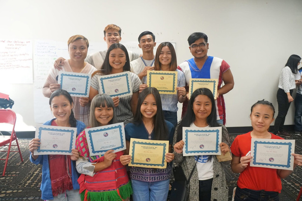
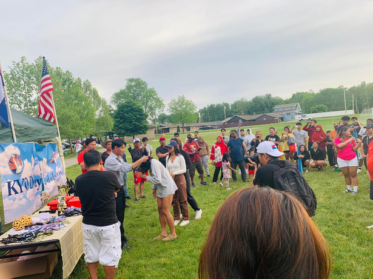
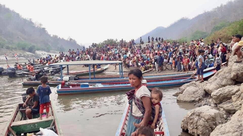

01
Civic education
Advocacy training, public-system learning, Washington visits, local action, and an annual Youth Leadership Conference.
02 — What we do

Advocacy training, public-system learning, Washington visits, local action, and an annual Youth Leadership Conference.

Community visits, workshops, arts, sport, and cultural events that keep relationships and knowledge moving.

Practical support for displaced families through food, water, shelter, education, and vocational training.